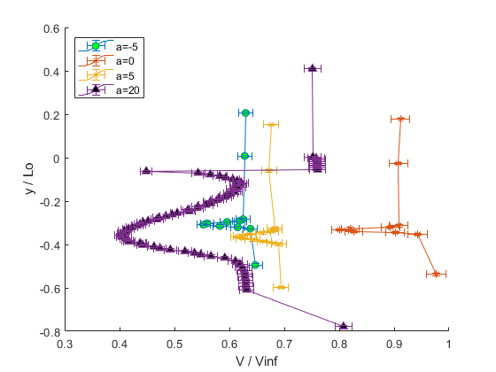
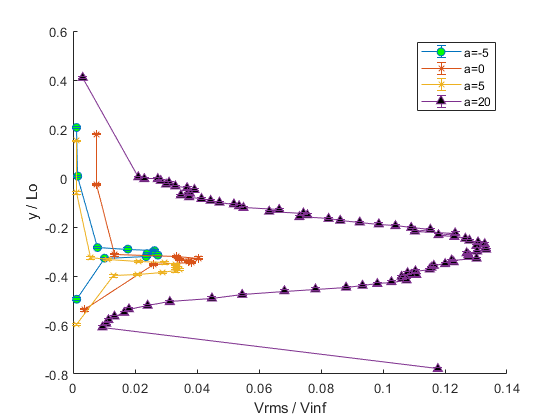

Contents
Turbulence Profiles
Trevor Burgoyne 16 Oct 2022
% Paths for data loading ROOT_DIR = "C:/Users/Trevor/Desktop/AEM 4602W/Fluids Lab/Fluids Lab Data/"; HOTWIRE_DIR = ROOT_DIR + "Hotwire Measurements/"; ANGLES = ["-5", "00", "05", "20"]; N_DATAPOINTS = [11, 10, 15, 78]; V_AVG = 24.4247; % m/s, mean of all velocities, excluding nan T_AVG = 27.8641; % degrees C, mean of all temperatures P_AVG = 98769; % Pa, mean of all pressures, excluding nan RHO_AVG = 1.1430; % kg/m^3, mean of all densities, excluding nan MU_AVG = 1.85e-5; % Pa*s, dynamic viscosity at T_AVG and ~atm pressure. Src: https://www.engineeringtoolbox.com/air-absolute-kinematic-viscosity-d_601.html % Useful Conversions LB_TO_N = 4.448; % lb -> N = (lb) * 4.448 N/lb N_TO_LB = 1/LB_TO_N; DEG_TO_RAD = pi/180; % degrees -> rad = (deg)* pi/180 rad/deg IN_TO_M = 0.0254; % in -> m = (in) * .0254 m/in % Base Uncertainties F_ERR = 0.1; % ± N, given error in sting measurements A_ERR = 0.2; % ± degrees, given error in sting measurements C_ERR = 0.001; % ± m, bias error from using a meter stick B_ERR = 0.001; % ± m, bias error from using a meter stick V_ERR = 0.4; % ± m/s, given error in pitot tube measurements Y_ERR = 1/16; % ± in, bias error from reading hot wire tape measure X_ERR = 1/16; % ± in, bias error from reading hot wire tape measure L_ERR = 1/16; % ± in, bias error from reading hot wire tape measure RHO_ERR = 0.02*RHO_AVG; % *100 ± % of value, given error in pitot tube measurements MU_ERR = 0.01*MU_AVG; % *100 ± % of value, given error in pitot tube measurements V_RMS_ERR = 0.2; % ± m/s, from calibration spreadsheet F_ERR_LB = F_ERR * N_TO_LB; % lb A_ERR_RAD = A_ERR * DEG_TO_RAD; % rad Y_ERR_M = Y_ERR * IN_TO_M; % m X_ERR_M = X_ERR * IN_TO_M; % m L_ERR_M = L_ERR * IN_TO_M; % m % Arrays to store data per angle angle_data_arr = repmat(... struct(... "len_scale",[],... "v_normalized", [],... "v_rms", [],... "len_scale_ERR",[],... "v_normalized_ERR",[]... ), length(ANGLES), 1 ... ); % Experiment properties c = .254; % m, airfoil chord length x = .75*c; % m, distance from trailing edge to hot wire L = 19.5*IN_TO_M; % m, distance from hot wire to top of tunnel % Calibration constants: (E+offset)^2 = A + B*U^n offset = -8.92; % V, voltage at zero flow A = -74.9; % constant from linear regression B = 53.7; % constant from linear regression n = 0.55; % exponent in King's Law that gave straightest fit % Average Experiment Reynolds Number Re_AVG = (RHO_AVG*V_AVG*c)/MU_AVG Re_ERR = sqrt(... ( (RHO_ERR*V_AVG*c)/MU_AVG )^2 + ( (RHO_AVG*V_ERR*c)/MU_AVG )^2 + ... + ( (RHO_AVG*V_AVG*C_ERR)/MU_AVG )^2 + ( (-RHO_AVG*V_AVG*c*MU_ERR)/(MU_AVG^2) )^2 ... ) for i = 1:length(ANGLES) angle = ANGLES(i); angle_data_arr(i) = struct(... "len_scale", zeros(1, N_DATAPOINTS(i)),... "v_normalized", zeros(1, N_DATAPOINTS(i)),... "v_rms", zeros(1,N_DATAPOINTS(i)),... "len_scale_ERR", zeros(1,N_DATAPOINTS(i)),... "v_normalized_ERR", zeros(1,N_DATAPOINTS(i))... ); % LENGTH SCALE: the hot wire was positioned at x = .75c behind the % trailing edge of the airfoil, with the airfoil being L = 19.5in from % the top of the tunnel, as measured at zero angle of attack. % However, since moving the sting caused a change in the vertical % position of the TE, L0 was selected to be the distance from the top of % the tunnel to the airfoil, adjusted for angle of attack. Using trig, % this works out to be L - x*sin(a). a = str2double(angle); % deg L0 = L - x*sind(a); % m, height of TE adjusted for angle of attack L0_ERR = sqrt( (-x*sind(a)*L_ERR_M)^2 + ( (L-sind(a))*X_ERR_M )^2 + ( (L-x*cosd(a))*A_ERR_RAD )^2 ); % ± m for j = 1:N_DATAPOINTS(i) path = HOTWIRE_DIR + "a_" + ANGLES(i) + "/data_" + j + ".mat"; data = load(path); % lab data, with P, T, rho, v, a, y, and V_arr % NOTE: for some reason, the pitot tube returned a speed of 'nan' for % all of our measurements at a = 0. This isn't a huge deal, since the % freestream was always set to the same speed, so a good % approximation for this case is to use the average of all other % velocities we measured if(isnan(data.v)) data.v = V_AVG; end % NOTE: y as measured in the lab is the distance from the top of the % tunnel to the hot wire. L0, as discussed earlier, is the distance % from the top of the tunnel to the TE, adjusted for angle of attack. % To make values of y *above* the TE to be positive and *below* to be % negative, y was subtracted from L0 to transfrom y into the distance % of the hotwire above the TE. This was then nondimensionalized by L0 % len_scale = (L0 - y) / L0 len_scale = (L0 - (data.y * IN_TO_M)) / L0; len_scale_ERR = sqrt( ( (data.y*IN_TO_M*L0_ERR)/(L0^2) )^2 + (-Y_ERR_M/L0)^2 ); % unitless % hot wire velocity % from calibration: v_hotwire = (((E + offset)^2 - A)/B)^(1/n) v_hotwire_arr = (((data.V_arr + offset).^2 - A)./B).^(1/n); % v_rms = remove mean from velocities, take the average of their % squares, and then take the square root v_rms = sqrt( mean( ( v_hotwire_arr - mean(v_hotwire_arr) ).^2 ) ); v_rms = v_rms / data.v; % normalized to be non-dimensional % v_hotwire / v_freestream v_normalized = mean(v_hotwire_arr) / data.v; v_normalized_ERR = sqrt( (V_RMS_ERR/data.v)^2 + ( (-V_ERR*mean(v_hotwire_arr))/(data.v^2) )^2 ); % unitless % Store in global arr angle_data_arr(i).len_scale(j) = len_scale; angle_data_arr(i).len_scale_ERR(j) = len_scale_ERR; angle_data_arr(i).v_normalized(j) = v_normalized; angle_data_arr(i).v_normalized_ERR(j) = v_normalized_ERR; angle_data_arr(i).v_rms(j) = v_rms; end end
Re_AVG = 3.8330e+05 Re_ERR = 1.0730e+04
V/Vinf
colors = ["green", "red", "blue", "black"]; shapes = ["-o", "-*", "-x", "-^"]; hold on for i = 1:length(ANGLES) errorbar(angle_data_arr(i).v_normalized, angle_data_arr(i).len_scale,... angle_data_arr(i).len_scale_ERR,... % yneg angle_data_arr(i).len_scale_ERR,... % ypos angle_data_arr(i).v_normalized_ERR,... % xneg angle_data_arr(i).v_normalized_ERR,... % xpos shapes(i), 'MarkerFaceColor', colors(i)... ) end xlabel("V / Vinf") ylabel("y / Lo") xlim([.3, 1]) legend('a=-5', 'a=0', 'a=5', "a=20", 'AutoUpdate', 'off', 'Location', 'northwest')
Vrms/Vinf
colors = ["green", "red", "blue", "black"]; shapes = ["-o", "-*", "-x", "-^"]; clf % clear previous figure hold on for i = 1:length(ANGLES) errorbar(angle_data_arr(i).v_rms, angle_data_arr(i).len_scale, angle_data_arr(i).len_scale_ERR, shapes(i), 'MarkerFaceColor', colors(i)) end xlabel("Vrms / Vinf") ylabel("y / Lo") legend('a=-5', 'a=0', 'a=5', "a=20", 'AutoUpdate', 'off', 'Location', 'northeast')